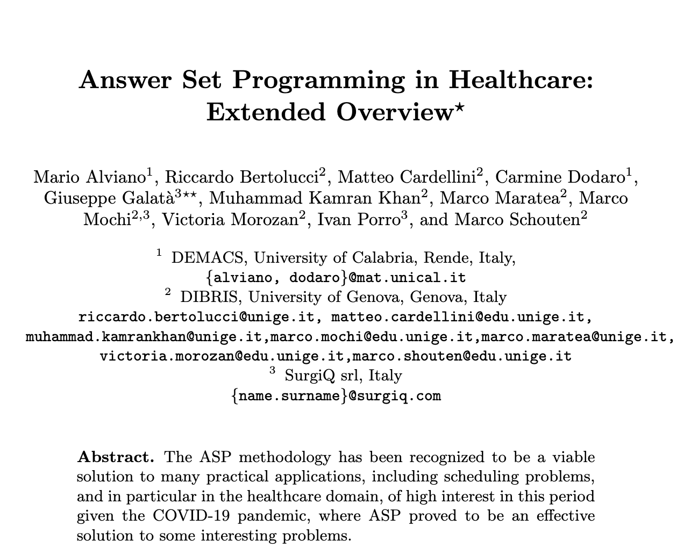

|
Marco Schouten I am a PhD student in computer science at DTU in Copenhagen, member of the Belongie Lab, advised by Dim P. Papadopoulos and Serge Belongie. My research focuses on diffusion models for image generation, editing and understanding. |

|
Publications |

|
POEM: Precise Object-level Editing via MLLM control
Marco Schouten, M. Onurcan Kaya, Serge Belongie, Dim P. Papadopoulos SCIA, 2025 webpage / arXiv While diffusion models excel at text-to-image generation, precise object-level editing is challenging; text instructions lack localization, and interaction methods require manual effort. We propose a framework that leverages LLMs to analyze editing prompts and generate pre/post-transformation object masks. This structured reasoning guides the diffusion process for accurate control. |
|
|
An ASP-based Approach to Master Surgical Scheduling
Linda Cadermatori, Giuseppe Galatà, Carola Lo Monaco, Marco Maratea, Marco Mochi, Marco Schouten CILC, 2022 The Master Surgical Schedule problem involves assigning hospital specialties to operating rooms. A poor MSS increases costs and patient wait times. This paper proposes a solution using Answer Set Programming. |
|

|
Answer Set Programming in Healthcare: Extended Overview
Mario Alviano, Riccardo Bertolucci, Matteo Cardellini, Carmine Dodaro, Giuseppe Galata, Muhammad Kamran Khan, Marco Maratea, Marco Mochi, Victoria Morozan, Ivan Porro, Marco Schouten IPS-RCRA@AI*IA, 2020 Answer Set Programming is a viable solution for many practical scheduling applications, particularly in healthcare. This paper reviews ASP's success in solving healthcare scheduling problems. We detail improvements to solutions for "basic" problems like operating room scheduling (with scarce resources like ICU beds) and Nurse Scheduling. |
Teaching |
Teaching assistant for Introduction to Deep Learning in Computer Vision (DTU). Teaching assistant for Advanced Deep Learning in Computer Vision (DTU). |
|
© 2025 Marco Schouten — This website uses a Jon Barron template. |